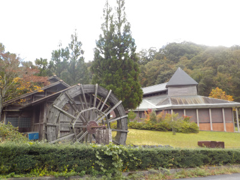
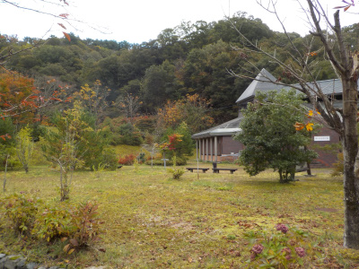
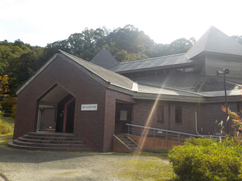
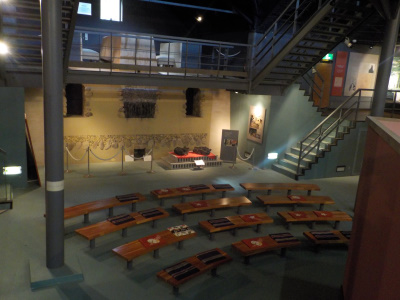
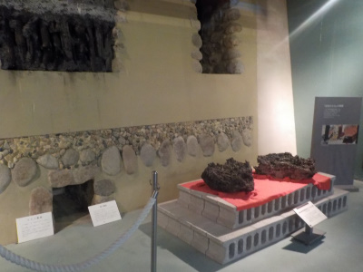

閉館した鉄の未来博物館が綺麗でした。
2023/10/29

移動中に大きな水車が見えたので、写真を撮ろうと寄ってみました。

令和3年3月31日で閉館したそうですが、お庭が綺麗でした。
島根県雲南市吉田町吉田892番地1
2023/10/29

移動中に大きな水車が見えたので、写真を撮ろうと寄ってみました。

令和3年3月31日で閉館したそうですが、お庭が綺麗でした。
2019/10/22
山の中にある鉄の未来科学館。
なぜここに鉄の未来博物館があるのか不明です。

菅谷たたら山内や鉄の歴史博物館から離れているので、ちょっと便利が悪いです。
今日は天皇陛下即位の日記念で無料でしたが、有料だったら行かないかも。
移動時間がちょっともったいない。

中は立体的で立派な造りです。

菅谷たたら高殿の模型等ありました。
本物があるのに、ここにレプリカが必要なのかな？なんて思いました。
海外の鉄高炉などの資料もあり鉄に関する勉強ができますが、基本見るだけなので教科書っぽいって思いました。